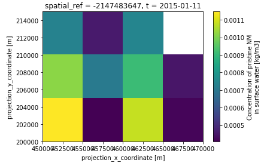

The NanoFASE model#
The NanoFASE model is a multimedia spatiotemporal environmental fate and exposure model for engineered nanomaterials. The model predicts concentrations of nanomaterials with spatial (~kms) and temporal (~days) resolution in soils, surface waters and sediments, at the catchment scale and larger. See the project website for information about the EU Horizon 2020 project that led to the development of this model.
Caution
Currently in active development
Quickstart guide#
The easiest way to install the model is to use the Fortran Package Manager, which can be installed using Conda (conda install -c conda-forge fpm). The model also requires a recent version of GFortran, NetCDF Fortran and Git installed (see Building the model).
Clone the code (make sure to --recurse-submodules) and use fpm to install:
$ git clone git@github.com:NERC-CEH/nanofase.git --recurse-submodules
$ cd nanofase
$ fpm @install
Use the --prefix <path-to-installation-dir> flag to install the model into a directory of your choice, e.g. fpm @install --prefix <path-to-installation-dir>.
Test the model with the test scenario. Presuming the install directory is on your $PATH:
$ mkdir log output
$ nanofase config.example/test-scenario.nml
Or you can use fpm to run the model, without needing to install it first (i.e. omitting the fpm @install step above):
# Debug version
$ fpm @run -- config.example/test-scenario.nml
# Release version with optimisations turned on
$ fpm @release -- config.example/test-scenario.nml
Take a look at the NetCDF output file using your software of choice. For example, using Python’s xarray to plot the pristine NM concentration in rivers at the end of the model run (2015-01-11):
>>> import xarray
>>> ds = xarray.open_dataset('output/output.nc')
>>> ds['water__C_nm'].sel(t='2015-01-11').plot()

Next steps:
Check out Building the model and Runing the model for more build options and basic info on running the model.
Take a copy of the test scenario config file and start playing around with the config options.
Run the fuller example scenario of nano-TiO2 in the Thames catchment in 2015, by using the config.example.nml file.
Have a look at the example input data NetCDF and constants files to see the kind of input data the model needs.
Acknowledgements#
This model has received funding from the European Union’s Horizon 2020 research and innovation programme under grant agreement numbers 646002 (NanoFASE), 814572 (NanoSolveIT), 862419 (SAbyNA), 862444 (ASINA) and 731032 (NanoCommons).